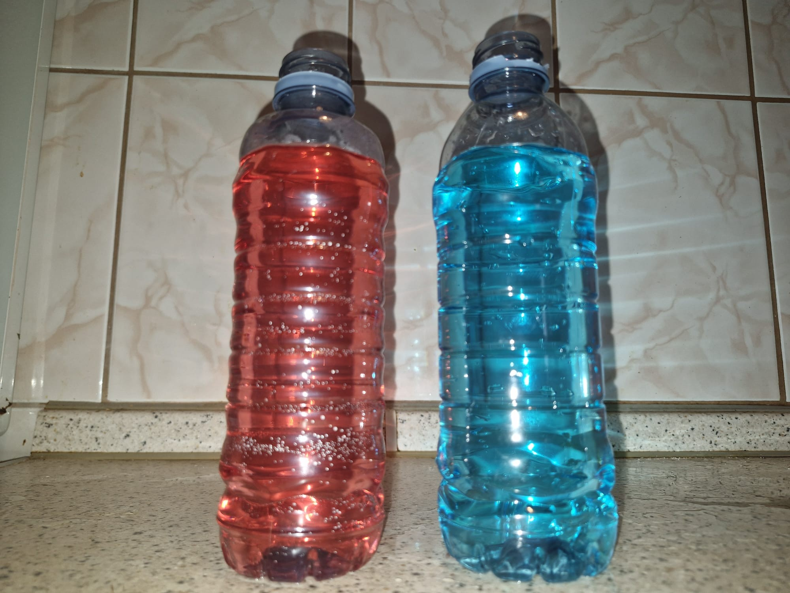
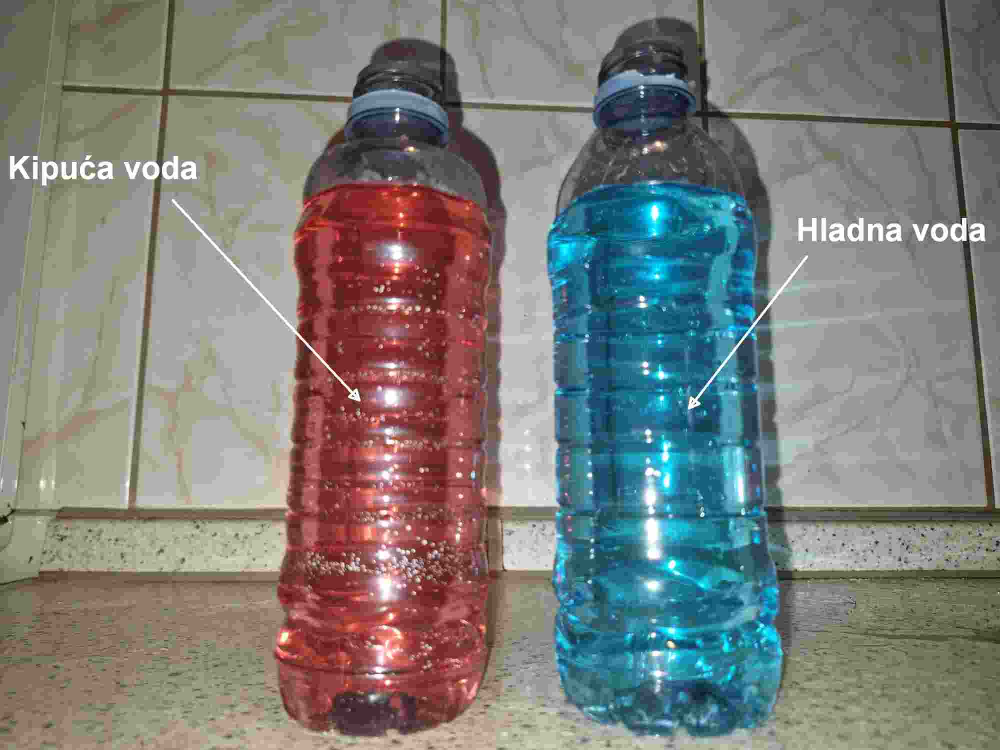
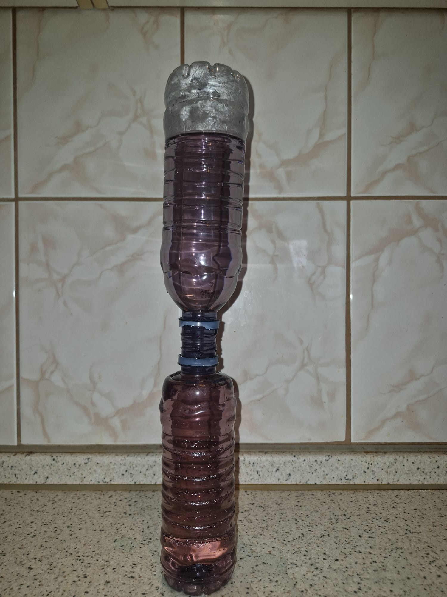
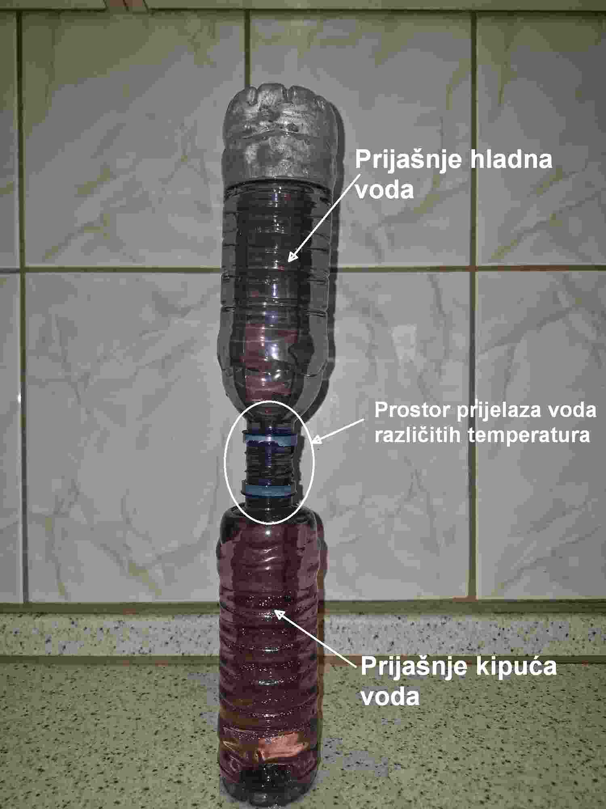
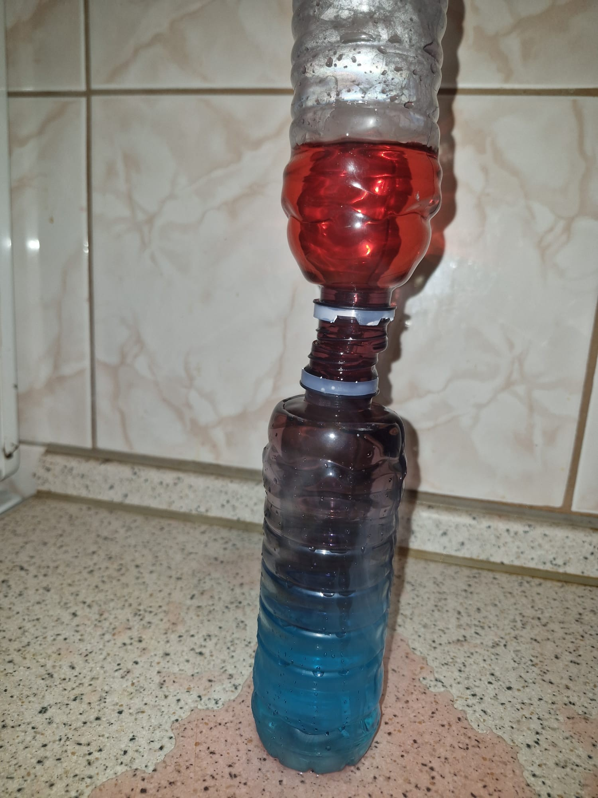
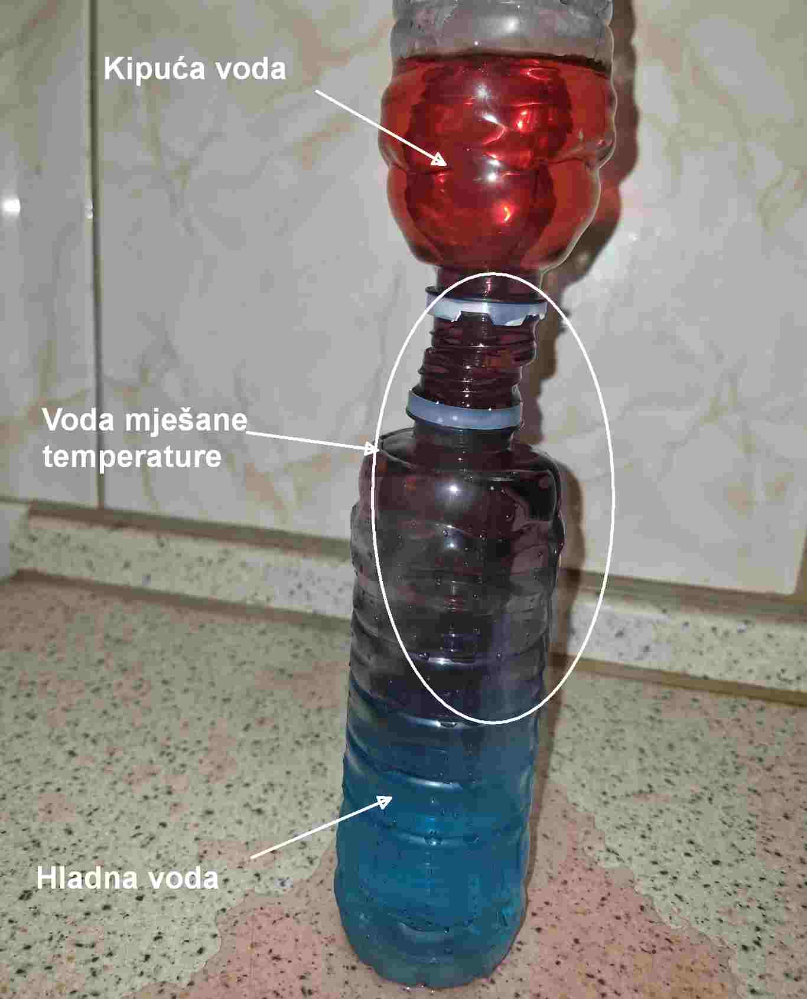
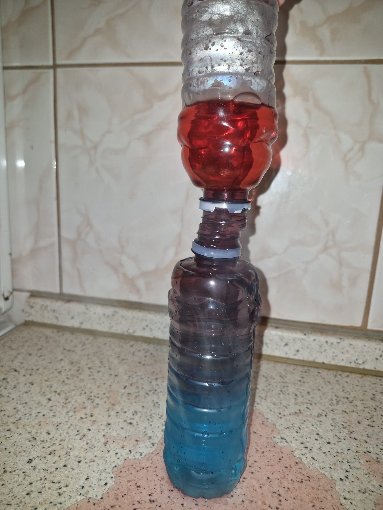
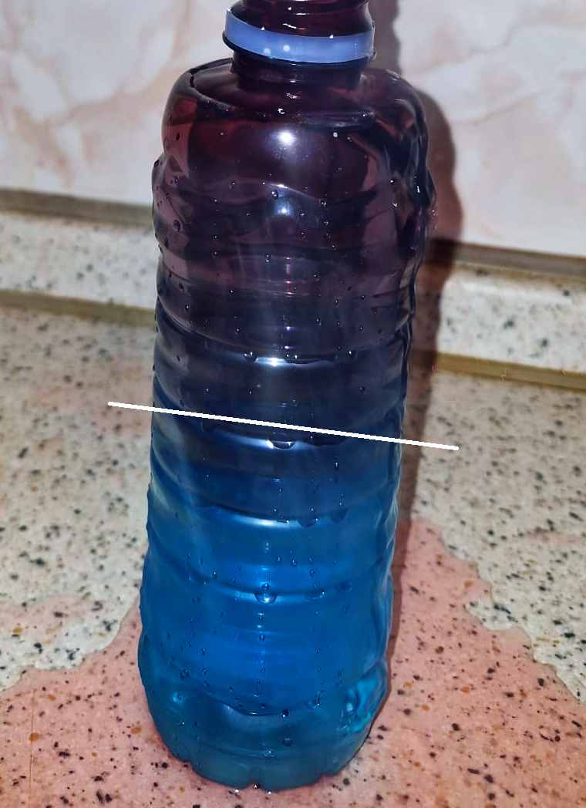
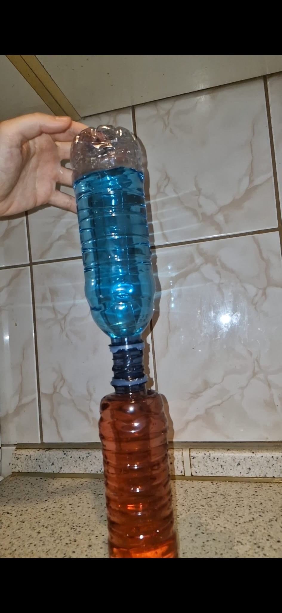

Ovaj web album prikazuje originalne i obrađene fotografije povezane s temom fizikalnih pojava u vezi moje izabrane teme za završni rad "Mjerenje topline".
Fotografije su obrađene u programu IrfanView.
Slika 1
Original:

Obrađena:

Slika prikazuje dvije boce, u jednoj boci je kipuća voda koja je obojana crvenom bojom, a u drugoj boci je hladna voda obojana plavom bojom
Slika 2
Original:

Obrađena:

Miješanje kipuće vode sa hladnom. Bocu sa hladnom vodom sam stavila na bocu sa kipućom vodom tako da sam otvor boce s hladnom vodom blokirala plastičnom karticom. Kada je boca hladne vode bila iznad boce kipuće vode, maknula sam karticu. Dvije tekuće će se dobro pomiješati. Znamo da hladna voda uvijek tone dok vruća uvijek pluta tj. hladna voda se miče prema dolje a vruća prema gore Hladna voda tone zato što je gušća od tople vode. Kod hladnije vode se molekule sporije kreću i približavaju jedna drugoj, čime se smanjuje volumen vode, a povećava gustoća iste, što rezultira težom vodom koja tone pod utjecajem gravitacije, dok topla, rjeđa voda ostaje na površini tj. miče se prema gore.
Slika 3
Original:

Obrađena:

miješanje hladne vode s kipućom. Bocu s kipućom vodom stavimo na bocu s hladnom vodom tako da sam otvor boce s kipućom vodom blokiramo plastičnom karticom. Kada je boca kipuće vode bila iznad boce hladne vode, maknemo karticu. Dvije tekućine se neće dobro pomiješati jer će dio kipuće vode ostati u njenom prvotnom spremniku, isto vrijedi za hladnu vodu. postojat će prostor u kojem će te dvije tekućine biti pomiješane i nalazit će se između prostora gdje su hladna i kipuća voda pohranjene.
Slika 4
Original:

Obrađena:

Bolji prikaz segregiranosti hladne vode i vode gdje su se kipuća i hladna voda pomiješale. Bijela crta predstavlja granicu između te dvije tekućine
Slika 5
Original:

Obrađena:

Miješanje dvije hladne vode, jedna je obojana crveno, jedna plavo, otprilike su jednakih temperatura. Neće se uopće pomiješati to jest biti će u potpunosti segregirane jer ne dolazi do izmjene toplina među ta dva fluida jer su u toplinskoj ravnoteži.